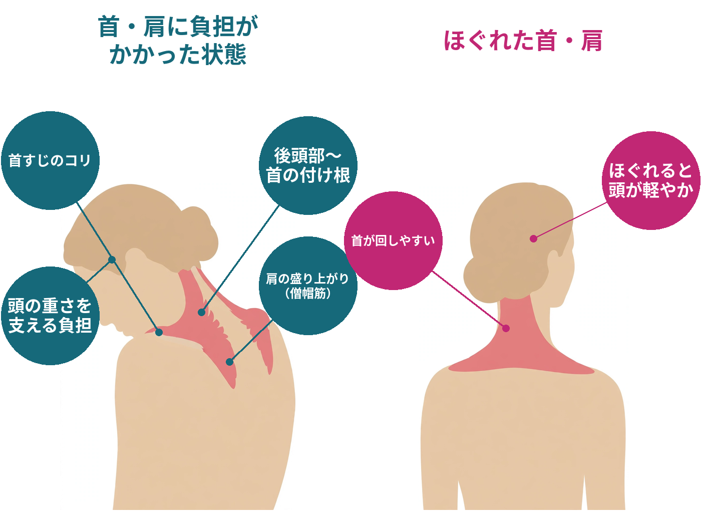

首こり・偏頭痛
美容整体ステラ・ポラリス東三国｜大阪市淀川区東三国・東三国駅徒歩5分・女性向け

鍼灸師の視点で、自律神経と首のラインを整えるケア
首は頭を支えながら、脳へ向かう血管や神経が通る大切な通り道です。姿勢の崩れや目の疲れ、冷え、睡眠不足などが重なると首まわりの筋肉が緊張し、重だるさとして感じやすくなります。頭の重さが気になる方の中には、天候の変化や疲れの蓄積とともに、頭まわりの締めつけ感や違和感を覚える方もいます。鍼灸の世界では、首まわりは全身の巡りを考えるうえでも大切な部位とされてきました。このページでは、首こりの背景にある仕組みと、首まわりが軽く感じられる状態を目指す当サロンでのケア、ご自宅でできるセルフケアをご案内します。まずは下のチェックで、ご自身の状態を確かめてみてください。
ご予約はこちら（Coubic）こんなお悩みありませんか
- 朝起きたときから、首や肩が重い日が多い
- 夕方になると、頭の重さや締めつけ感を感じることがある
- 天気が崩れる前に、頭まわりの違和感が強くなる気がする
- 目の疲れと一緒に、首の後ろが張ってくる
- マッサージを受けても、数日で元の重さに戻ってしまう
- 寝つきが悪く、朝すっきり起きられない日がある
- 首を回すとゴリゴリと音がして、動かしにくく感じる
当てはまる項目が多いほど、首まわりの筋肉の緊張が積み重なっている目安とされています。首の重さは、首だけの問題ではなく、姿勢や目の使い方、睡眠の状態とも関わっています。次のセルフチェックで、今の首の動きの傾向を確かめてみましょう。
簡単セルフチェック（首の可動域チェック）
座ったままできる、首の動かしやすさの傾向を知るための簡単な方法です。
- 背筋を伸ばして椅子に座り、まっすぐ前を見ます。
- ゆっくり右を向き、次に左を向きます。さらに、耳を肩に近づけるように左右へ倒します。
- 向きやすい側と向きにくい側の差が大きい、途中でつっぱる感じがする場合は、首まわりの筋肉の緊張に偏りがある目安と言われています。
※これは診断ではありません。ご自身の状態の傾向を知る目安としてお使いください。
首こり・偏頭痛の原因と仕組み
首の構造と頭の重さ
首は、体重の約1割ほどある頭を、細い骨と筋肉で支えています。まっすぐな姿勢では頭の重さは背骨の上にのりますが、頭が前に出る姿勢では、首の後ろ側の筋肉が常に引き伸ばされながら頭を支えることになり、負担が増えると言われています。首まわりには脳へ向かう血管や神経も通っているため、この部位の緊張は頭まわりの重さの感覚とも関わると考えられています。図1のように、首の状態は頭・肩・背中の見え方や感覚にもつながっていきます。

図1 首こりの姿勢で起こりやすい変化と、首のラインが整った姿勢のイメージ。姿勢の状態には個人差があります。
姿勢と目の疲れの関係
パソコンやスマートフォンの画面を長く見続ける生活では、目の筋肉が働き続け、首や肩も同じ姿勢で固定されがちです。画面に集中するほど頭は前に出やすく、首の後ろの張りと目の疲れが一緒に強くなる方も少なくありません。首の緊張と目の疲れは、どちらか一方ではなく、姿勢を土台としてつながっていると考えることができます。
冷えと巡りの滞り
首まわりは、体の中でも冷えやすい部位のひとつです。冷房の効いた室内や冬の外出で首が冷えると、筋肉はこわばりやすく、巡りも滞りやすくなると言われています。巡りが滞ると、老廃物が流れにくくなり、重だるさの感覚につながることがあります。
睡眠やストレスとの関わり
首まわりの緊張は、自律神経のバランスとも関わると言われています。忙しさやストレスが続くと体は緊張モードになりやすく、寝ている間も首や肩に力が入ったままになることがあります。睡眠の質が下がると疲れが抜けにくくなり、翌朝の首の重さにつながる、という循環が起こりやすくなります。
セルフケアで足りる場合・サロンケアが向く場合
重さが軽く、首を温めたりストレッチをしたりしたあとに軽く感じる日が多い場合は、まずご自宅でのセルフケアを続けて様子を見る方法があります。一方で、首まわりが自分ではゆるめにくい、ほぐしても数日で戻ってしまう、頭まわりの重さも含めて全身をリセットしたいという場合は、サロンでのケアが向いている目安になります。サロンでは、首だけでなく頭まわり・肩・背中を含めてゆるめることで、施術後に「首が軽くなった」「頭がすっきりした」と感じやすい状態を目指します。どちらが正解というものではなく、今の状態に合わせて選ぶことが大切です。
当サロンでのケア
当サロンでは鍼は使いませんが、鍼灸師としての知識を活かし、首・肩・頭まわりのツボや筋肉の状態を確認しながら施術を組み立てます。部位と目的に合わせて3つの手技を組み合わせます。
美容整体：頭の位置と首のラインを整え、首まわりに負担のかかりにくい姿勢の土台をつくることを目的に。あごを引いた自然な姿勢の感覚もお伝えします。
アロマオイルマッサージ：首・肩・デコルテまわりの緊張をオイルでゆるめ、巡りが流れやすい状態を目指します。香りに包まれながらほぐれる、リラックス感の高いケアです。
もみほぐし：首の後ろから肩、頭まわりの固まりやすい部位を、ドライヘッドスパのようなやさしい圧で丁寧にほぐし、重だるさをゆるめることを目的に進めます。
ケアを通して目指すのは、こんな変化です。
- 首まわりが軽くなり、頭がすっきりしたような感覚へ
- 首のラインが整って、横から見た印象がすっきり見える姿勢へ
- 肩の張りがゆるんで、夕方の重だるさを感じにくい状態へ
- 深い呼吸がしやすくなり、リラックスしやすい体感へ
- 目まわりまで軽く感じられるような、頭全体のリセット感へ
施術では深い呼吸を促しながら、ゆったりとした時間を大切にしています。施術の前後で首の動かしやすさを一緒に確認し、「首が軽くなった」「頭がすっきりした」といった感覚の違いを確かめます。日常で気をつけたい姿勢や温め方のポイントもあわせてご案内します。

施術の流れ
ご来店後、気になる部位やお悩み、ご希望の強さなどをうかがいます。完全個室のため、周りを気にせずお話しいただけます。
首の動かしやすさや頭まわりの張り、姿勢の状態などを一緒に確認し、その日の状態に合わせた施術の進め方をご案内します。
美容整体を中心に、ご希望に応じてアロマオイルマッサージ、もみほぐしを組み合わせて進めます。強さは途中でも調整できます。
施術後の状態を確認し、ご自宅で続けやすいセルフケアのポイントをお伝えします。次回の目安についても、ご希望があればご案内します。
料金
| コース | 通常価格 | キャンペーン価格（12/25まで） |
|---|---|---|
| 80分 | 8,000円 | 3,000円 |
| 100分 | 10,000円 | 4,000円 |
| 120分 | 12,000円 | 5,000円 |
クリスマスキャンペーンは12月25日まで、ご新規様もリピーターの方も対象です。施術内容は当日の状態とご希望に合わせて組み立てます。
ご自宅でできるセルフケア
- 首を温める：蒸しタオルやホットタオルを首の後ろに当て、5分ほど温めます。1日1回、入浴後のリラックスした時間に行うのが目安です。
- 首のストレッチ：耳を肩に近づけるようにゆっくり倒し、左右それぞれ20〜30秒キープします。1日2〜3回、痛みのない範囲で行ってください。
- 画面の高さと休憩：パソコンやスマホの画面は目の高さに近づけ、1時間に一度は画面から目を離して首を回す休憩を取ります。
- 首を冷やさない工夫：冷房の効いた室内では、ストールや襟のある服で首まわりを覆うなど、冷えから守る工夫を取り入れてみてください。
ご自宅でのケアに：セルフケア資料ライブラリ（無料）
このお悩みに合わせたセルフケアの考え方を、無料の資料ライブラリでご紹介しています。
セルフケア資料ライブラリを開く →
受診の目安
突然の激しい頭痛や、ろれつが回らない・視界の異常を伴う場合は、すぐに医療機関を受診してください。また、首の痛みが長く続く場合や、手のしびれ・力の入りにくさを伴う場合も、施術の前に医療機関でご相談ください。
よくある質問
Q. 初めてでも大丈夫ですか？
はい。当サロンは完全予約制・完全個室で、1日3組までのご案内です。最初にカウンセリングで首や頭まわりの状態、気になる部位をうかがい、無理のない内容から始めます。施術の前後で首の動かしやすさを確認しながら「首が軽くなった」「頭がすっきりした」といった感覚の違いを一緒に確かめますので、初めての方も安心してご利用いただけます。
Q. 施術は痛いですか？
強さは、ご希望をうかがいながら調整します。首はデリケートな部位のため、強い力で揉むのではなく、頭まわりはやさしい圧で、肩や背中の土台からゆるめていく進め方を大切にしています。感じ方には個人差がありますので、施術中も遠慮なくお声がけください。
Q. コースはどう選べばいいですか？
80分・100分・120分のコースがあり、ケアしたい部位の広さやお時間のご都合に合わせて選べます。首こりのケアで首・肩から頭まわり、背中までゆっくり整えたい方には、100分が選ばれることが多いコースです。迷われる場合は、ご予約の際にお気軽にご相談ください。
Q. 場所と予約方法を教えてください。
大阪市淀川区東三国、東三国駅から徒歩5分です。完全予約制のため、予約サイト（Coubic）またはLINE公式アカウントからご予約をお願いしています。
Q. 男性も受けられますか？
当サロンは女性向けのため、男性の方は、同じ東三国の男性専用整体院「北辰堂」をご案内しています。
施術者について
平賀建人（施術歴30年）
鍼灸師・登録販売者・アロマセラピスト・パーソナルトレーナーの資格を持ち、美容整体を中心に、アロマオイルマッサージ、もみほぐしを、その日の状態とご希望に合わせて組み合わせて施術します。このページの内容は、施術者の知識と経験をもとに作成しています。

料金・ご予約
ご新規様もリピーターの方も 12/25まで
80分 3,000円／100分 4,000円／120分 5,000円
通常価格は80分8,000円／100分10,000円／120分12,000円です。施術内容はご希望に合わせて組み立てます。
営業時間：月〜土 17:00〜23:00／日 10:00〜23:00（完全予約制）｜電話：080-2468-3086
大阪府大阪市淀川区東三国2丁目25番4号101（東三国駅徒歩5分）